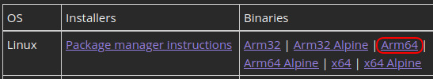

Topics
- Internet of Things
- Raspberry Pi 4
- Sense HAT
- .NET
- .NET 7 SDK
- Web API
- gRPC
- Console application
- Blazor server application
- Console application + 3rd-party Nuget libraries
- Terminal.GUI
- Spectre.Console
- Python/Flask
Environment and Tools
- Linux
- Ubuntu MATE
- Raspberry Pi OS
- Make files
- SSH and SCP
What is IoT?
The term IoT, or Internet of Things, refers to the collective network of connected devices and the technology that facilitates communication between devices and the cloud, as well as between the devices themselves. Thanks to the advent of inexpensive computer chips and high bandwidth telecommunication, we now have billions of devices connected to the internet. This means everyday devices like toothbrushes, vacuums, cars, and machines can use sensors to collect data and respond intelligently to users.
The Internet of Things integrates everyday “things” with the internet. Computer Engineers have been adding sensors and processors to everyday objects since the 90s. However, progress was initially slow because the chips were big and bulky. Low power computer chips called RFID tags were first used to track expensive equipment. As computing devices shrank in size, these chips also became smaller, faster, and smarter over time.
Single-Board Computer vs Microcontroller
A single-board computer (SBC) is a complete computer built on a single circuit board. It has a microprocessor(s), memory, input/output (I/O) and other features required of a fully functional computer, and runs a full operating system. Examples: Raspberry Pi, Orange Pi, Hummingboard.
A microcontroller (or MCU, for microcontroller unit) is a small computer on a single VLSI integrated circuit (IC) chip. A microcontroller contains one or more CPUs (processor cores) along with memory and programmable input/output peripherals. Program memory in the form of ferroelectric RAM, NOR flash or OTP ROM is also often included on chip, as well as a small amount of RAM. Microcontrollers are designed for embedded applications, in contrast to the microprocessors used in personal computers or other general purpose applications consisting of various discrete chips. Examples: Arduino, ESP32.
Pros and Cons
Single-board computers are more powerful, but take longer to start up, and require an orderly shutdown. Microcontrollers are "instant-on" and have a smaller footprint, but are much more resource-constrained.
IoT in .NET
The .NET IoT libraries provide support for direct GPIO programming, and also device bindings for a comprehensive set of sensors, motor controllers, motion sensors, displays, and more.
The libraries require at least ARM v7, meaning they will not work on SBCs like the Raspberry Pi Zero. They support SBC hardware, not microcontrollers: If you are interested in microcontroller programming in .NET, check out .NET nanoFramework.
References
| Description | Link |
|---|---|
| What is IoT (Internet of Things)? - Everything you need to know - AWS | https://aws.amazon.com/what-is/iot/ |
| Microcontroller - Wikipedia | https://en.wikipedia.org/wiki/Microcontroller |
| .NET Internet of Things (IoT) applications | https://dotnet.microsoft.com/en-us/apps/iot |
Configure the Raspberry Pi and Sense HAT
This is my working setup. Yours may be different, but this is the one that works for me.
Obtain a Raspberry Pi. I'm using a Raspberry Pi 4.
Install the 64-bit version of Raspberry Pi OS.
Using the raspi-config application, enable the following services:
- SSH - Allows remote access to the Raspberry Pi via Secure Shell.
- I2C - Enables the serial communication bus, allowing communication with attached devices and sensors.
Obtain a Sense HAT. The Raspberry Pi Sense HAT (Hardware Attached on Top) is an add-on board for Raspberry Pi. The Sense HAT is equipped with an 8×8 RGB LED matrix, a five-button joystick, and includes the following sensors:
- Gyroscope
- Accelerometer
- Magnetometer
- Temperature
- Barometric pressure
- Humidity
The Sense HAT can be installed directly on top of the Raspberry Pi. Keep in mind, however, that the ambient heat from the Raspberry Pi will influence the readings from the temperature sensor. If you want more accurate readings, you should use a compatible ribbon cable.
.NET SDK - Raspberry Pi
Download and install the .NET 7 SDK for 64-bit ARM devices, located here.

Why are we using the 64-bit SDK?
.NET gRPC services are not supported in the 32-bit SDK.
.NET WebAPI Project (traditional REST)
Create the Service
https://github.com/jfcarr/dotnet-iot-tui/tree/main/src/SenseHatProvider
Steps:
- Create the project, using
webapias the project type. - Add a project reference to
SenseHatLib.csproj - Add .NET IoT bindings.
- Configure the project for remote access (in
launchsettings.json) - Configure RESTful access to sensor data.
Service Startup
Open a terminal in the project directory and run:
dotnet run
If you want to start the service and leave it running in the background, add an ampersand to your command:
dotnet run &
Test with Swagger
Access the service Swagger page at http://<service ip>:<service port>/swagger.
.NET gRPC Project
Create the Service
https://github.com/jfcarr/dotnet-iot-tui/tree/main/src/SenseHatGrpcProvider
Steps:
- Create the project, using
grpcas the project type. - Add a project reference to
SenseHatLib.csproj - Add .NET IoT bindings.
- Configure the project for remote access (in
launchsettings.json) - Update the protocol buffer file with sensor-specific request and response messages.
- Implement the service messages.
Service Startup
Open a terminal in the project directory and run:
dotnet run
If you want to start the service and leave it running in the background, add an ampersand to your command:
dotnet run &
Testing
We won't implement a tester as part of this discussion, but if you want to explore this further on your own, here are some options for implementing a gRPC test runner:
.NET Console
The simplest CLI. No bells and whistles, but it gets the job done!
We'll build two versions: One will retrieve sensor data using our REST service, and the other will call the gRPC service.
Console Project for REST
https://github.com/jfcarr/dotnet-iot-tui/tree/main/src/ConsoleClient
Steps:
- Create the project, using
consoleas the project type. - Add a project reference to
SenseHatLib.csproj - App settings:
- Copy the
appsettings.default.jsonfile toappsettings.json, and update the setting values. - Add appsettings content entry to the .csproj file.
- Copy the
- Implement details in
Program.cs
Console Project for gRPC
https://github.com/jfcarr/dotnet-iot-tui/tree/main/src/SenseHatGrpcClient
Steps:
- Create the project, using
consoleas the project type. - Add package references to support gRPC:
Google.Protobuf,Grpc.Net.Client, andGrpc.Tools. - Add a project reference to
SenseHatLib.csproj - App settings:
- Copy the
appsettings.default.jsonfile toappsettings.json, and update the setting values. - Add appsettings content entry to the .csproj file.
- Copy the
- Protocol buffer:
- Copy the protocol buffer file from the gRPC service project, and update the namespace.
- Add a Protobuf entry to the project file.
- Implement details in
Program.cs
Blazor
A web application, for displaying the sensor data in a browser. .NET supports two Blazor project types: Blazor Server (runs on the server) and Blazor WebAssembly (runs in the browser). We'll be using the Server type.
Create the Project
https://github.com/jfcarr/dotnet-iot-tui/tree/main/src/BlazorClient
Steps:
- Create the project, using
blazorserveras the project type. - Add a project reference to
SenseHatLib.csproj - App settings:
- Copy the
appsettings.default.jsonfile toappsettings.json, and update the setting values. - Add appsettings content entry to the .csproj file.
- Copy the
- Sensor page:
- Add a new
Sensor.razorpage. - Add a code-behind file for the page:
Sensor.razor.cs. - Implement code details.
- Update
NavMenu.razorto include the new Sensor page.
- Add a new
Terminal.GUI
From the Terminal.Gui repo:
Terminal.Gui: A toolkit for building rich console apps for .NET, .NET Core, and Mono that works on Windows, the Mac, and Linux/Unix.
What's a TUI?
In computing, text-based user interfaces (TUI) (alternately terminal user interfaces, to reflect a dependence upon the properties of computer terminals and not just text), is a retronym describing a type of user interface (UI) common as an early form of human–computer interaction, before the advent of modern conventional graphical user interfaces (GUIs). Like GUIs, they may use the entire screen area and accept mouse and other inputs. They may also use color and often structure the display using special graphical characters such as ┌ and ╣, referred to in Unicode as the "box drawing" set. The modern context of use is usually a terminal emulator.
What are the benefits?
- Performance
- Runnable on headless systems
- Standalone
- Nice balance between the simplicity of a CLI and the enhanced presentation/controls/widgets of a GUI.
Create the Project
https://github.com/jfcarr/dotnet-iot-tui/tree/main/src/TerminalGuiClient
- Create the project, using
consoleas the project type. - Add a package reference to
Terminal.Gui. - Add a project reference to
SenseHatLib.csproj - App settings:
- Copy the
appsettings.default.jsonfile toappsettings.json, and update the setting values. - Add appsettings content entry to the .csproj file.
- Copy the
- Implement details in
Program.cs
Spectre.Console
From the Spectre.Console repo:
A .NET library that makes it easier to create beautiful, cross platform, console applications. It is heavily inspired by the excellent Rich library for Python. For detailed usage instructions, please refer to the documentation at https://spectreconsole.net/.
Spectre.Console vs Terminal.GUI
Using Terminal.Gui, you can create applications that look more like traditional desktop apps than you can with Spectre.Console. But, Terminal.Gui has a critical dependency that introduces a limitation: It requires a graphical stack for rendering. Usually, this is fine: You'll be running your Terminal.Gui applications from a command prompt in Windows, or in a terminal from your Linux desktop. But, for something like a Linux server that boots to a CLI, your Terminal.Gui applications will not run because there's no graphical stack.
Spectre.Console applications do not follow the "desktop application" paradigm. They are closer to console applications, but with enhanced colors, and rendering of other things like tables, but in a scrolling view. Most importantly, though, Spectre.Console applications do not require a graphical environment. So, for a purely text-based environment, Spectre.Console fills this need.
Create the Project
https://github.com/jfcarr/dotnet-iot-tui/tree/main/src/SpectreClient
- Create the project, using
consoleas the project type. - Add package references:
- Spectre.Console.Cli (adds nice command line argument handling)
- Spectre.Console
- Add a project reference to
SenseHatLib.csproj - App settings:
- Copy the
appsettings.default.jsonfile toappsettings.json, and update the setting values. - Add appsettings content entry to the .csproj file.
- Copy the
- Implement details in
Program.cs
Python / Flask Project
Using a standard like REST to capture information from a device and make it available means we can swap out the internal details of the service implementation. This can be as simple as refactoring of an existing implementation, or as drastic as completely replacing the dev stack.
This is an example of recreating our .NET implementation with Python/Flask.
Create the Project
https://github.com/jfcarr/dotnet-iot-tui/tree/main/src/SenseHatFlaskProvider
- Install Python (you probably already have it).
- Install libraries for Flask and the Sense HAT:
pip install flaskpip install sense-hat
- Create
service.pyfile. Add endpoints and supporting code.
Start the Service
flask --app service run --host=0.0.0.0 --port 5191